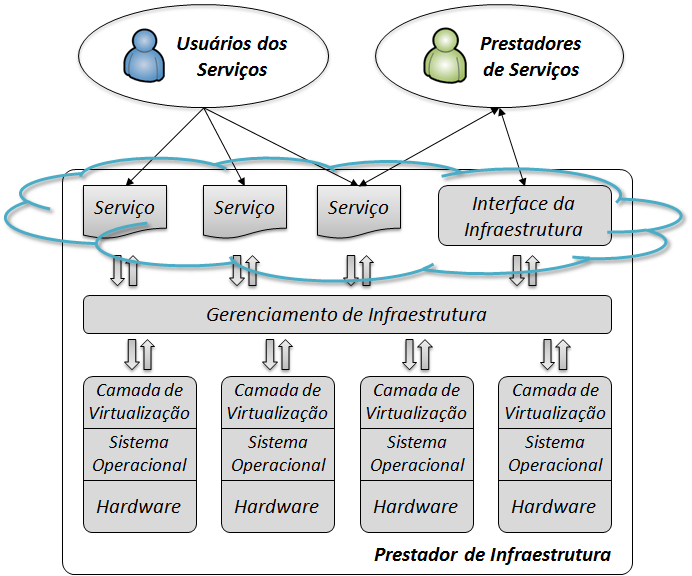

Existem diversas tecnologias que podem ser consideradas "verdes" na computação.
Algumas delas incluem:
Virtualização de servidores: essa tecnologia permite que múltiplos servidores sejam executados em um único hardware,
reduzindo o consumo de energia e espaço físico.
Cloud computing: o uso de serviços em nuvem pode reduzir a necessidade de hardware local e diminuir o consumo de energia
e recursos.

Uso de energia renovável: a utilização de fontes de energia renovável, como a solar e a eólica, pode reduzir a pegada de
carbono da indústria de TI.

Reciclagem de componentes eletrônicos: a reciclagem de componentes eletrônicos pode reduzir a quantidade de resíduos
eletrônicos e ajudar a preservar recursos naturais.